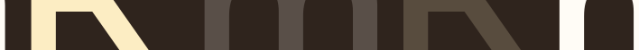

Merkamueble
Doble rediseño de interfaz Merkamueble.
↓¿Cómo fue el proyecto?
Proyecto académico desarrollado en el marco del Máster en Diseño Gráfico y Desarrollo Web UX/UI de la Cámara de Comercio de Sevilla. Actividad de clase en la que se rediseñó en dos estilos la home de Merkamueble.
Diseño Vintage vs. Diseño Elegante